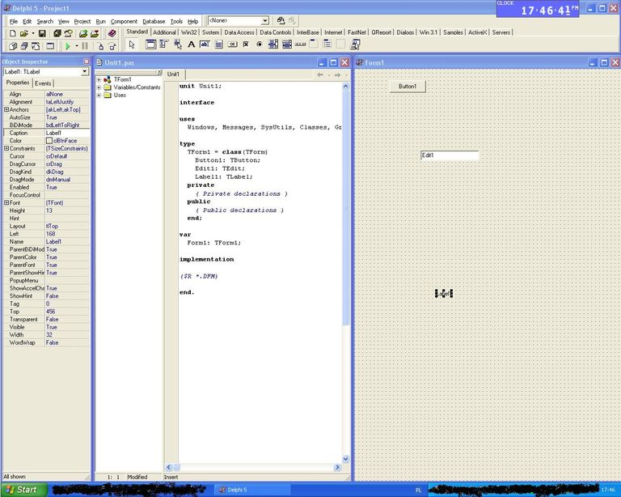

Aby uruchomiæ program, nale¿y go najpierw skompilowaæ. Jak wspomnieliœmy
wczeœniej, kompilacja dotyczy ca³ego projektu.
Wybierz "Project › Compile MojaPierwszaAplikacja" lub naciœnij klawisze Ctrl-F9.
Program zostanie skompilowany. Nastêpnie, uruchom go "Run › Run" lub wciœnij F9.
Z regu³y nie trzeba rêcznie wymuszaæ kompilacji; polecenie uruchomienia programu
spowoduje jednoczeœnie wczeœniejsze jego skompilowanie.
Zauwa¿, ¿e po uruchomieniu programu zniknê³y okienka Inspektora Obiektów i
Drzewka Obiektu. Twój program sk³ada siê z jednego pustego okienka. Aby
zakoñczyæ uruchamianie programu, po prostu zamknij go. Je¿eli wolisz,
natychmiastowe przerwanie programu bêdzie wykonane równie¿, jeœli przejdziesz
do œrodowiska Delphi i w edytorze wciœniesz Ctrl-F2 lub wybierzesz
"Run › Program Reset". Mo¿e to byæ konieczne, kiedy na przyk³ad
(celowo lub niechc¹cy) napiszesz program, którego siê nie da zamkn¹æ.
Teraz otwórz katalog (np. w Eksploratorze Windows), gdzie zapisa³eœ swoje pliki.
Poœród plików Delphi (*.dpr, *.pas, *.dfm i innych) powinien znaleŸæ siê tam
plik MojaPierwszaAplikacja.exe. Tak: to jest Twój program! Jeœli chcesz, zamknij teraz
Delphi i uruchom go. Program dzia³a!
Omówie teraz wygl¹d kompilatora
Na górze jest pasek z którego dodaje siê gotowe obiekty(np. przyciski).
Na pasku po lewej stronie zmienia siê w³aœciwoœci obiektów oraz Formatki
Obok tego jest kod Ÿród³owy z rozszerzeniem *.pas, który jest bardzo podobny do tego pisanego w Pascalu. To co widaæ na obrazku dodawane jest automatycznie
Po prawej stronie jest FORM(zwane popularnie formatk¹), tu dodaje siê obiekty.